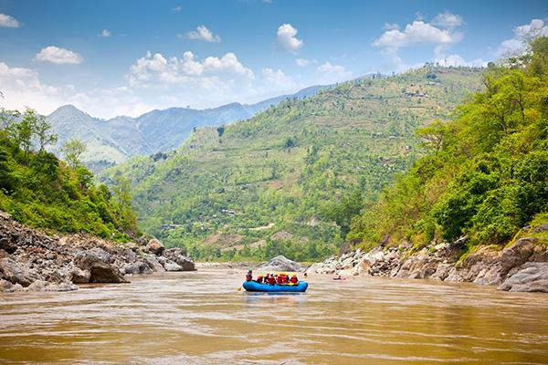
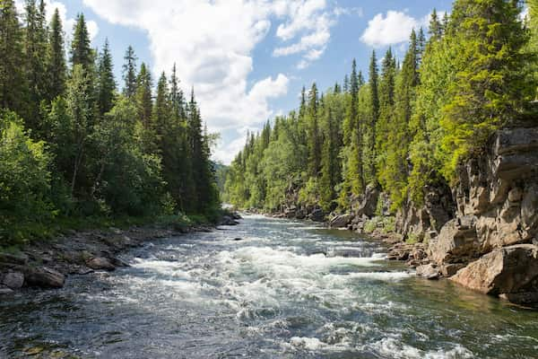

Find Your Trip Today
Fisher Towers
Embark on a fun and splashy adventure through the stunning Fisher Towers. This beginner-friendly trip offers gentle rapids, plenty of opportunities to swim, and breathtaking views at every turn. Our expert guides ensure a safe, laid-back experience that's big on scenery and ideal for anyone looking to dip their paddle into the world of white water rafting.
Green River

The Green River trip is the perfect middle ground. It has calm stretches mixed with exciting Class II-III rapids. Paddle through lush riverbanks and towering canyon walls as you learn to navigate more dynamic water. Whether you're stepping up from beginner or just looking for a slightly more adventurous ride, this trip balances fun, challenge, and natural beauty.
Cataract Canyon
Cataract Canyon delivers a heart-pounding ride through one of the most iconic stretches of river in the Southwest. With Class III-IV rapids, dramatic canyon views, and powerful currents, this intermediate-level trip is designed for thrill-seekers with some rafting experience. It's the wild ride you'll be talking about for years.
| Trip Name | Skill Level | Minimum Age | Price (per person) |
|---|---|---|---|
| Fisher Towers | Beginner | 8 | $80 |
| Green River | Beginner to Intermediate | 10 | $100 |
| Cataract Canyon | Intermediate | 14 | $120 |